导航、顶部、画布、统计卡和业务状态使用独立语义色，普通文字按 4.5:1 检查。
这是实际页面 renderer 与完整生产 CSS 的隔离浏览器截图，使用合成资料，未连接真实 WhatsApp 或 AI。点击图片可查看原尺寸。原生验收受捕获工具限制，仅完成部分操作；本页不表示全产品或 S3 门禁通过。
沿用筛选、档案折叠和真实聊天容器；舒适与紧凑模式保持同样的可读字号。
仅有限淡入、颜色与阴影反馈；支持现有动效关闭，不让表格或聊天区逐行运动。
今日工作台
升级前

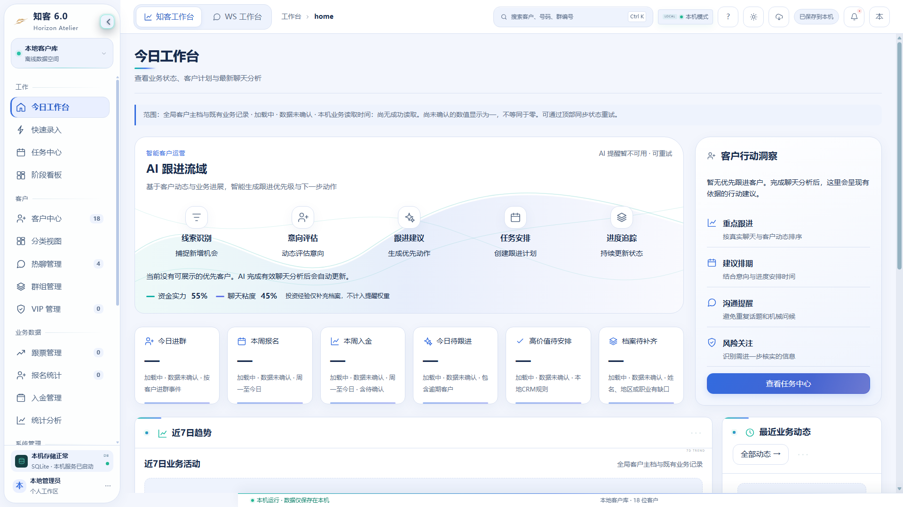
Horizon Atelier Pro

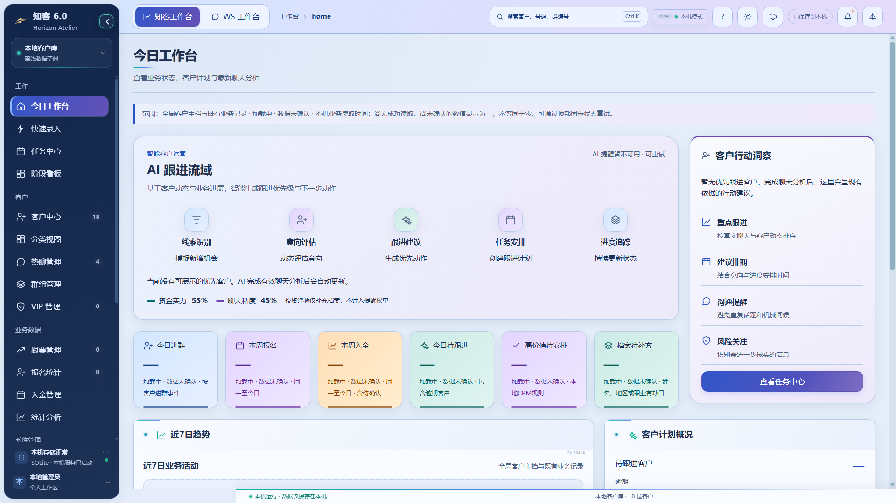
客户中心
升级前

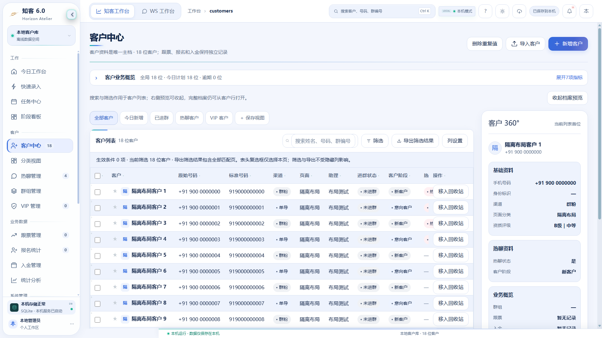
Horizon Atelier Pro

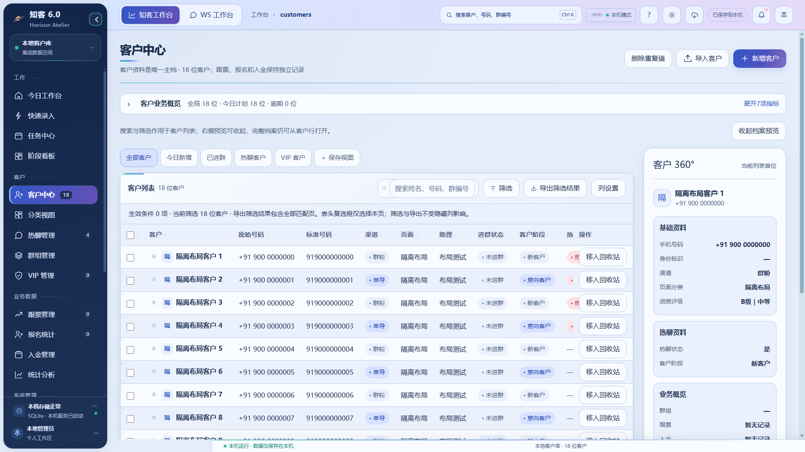
任务中心
升级前

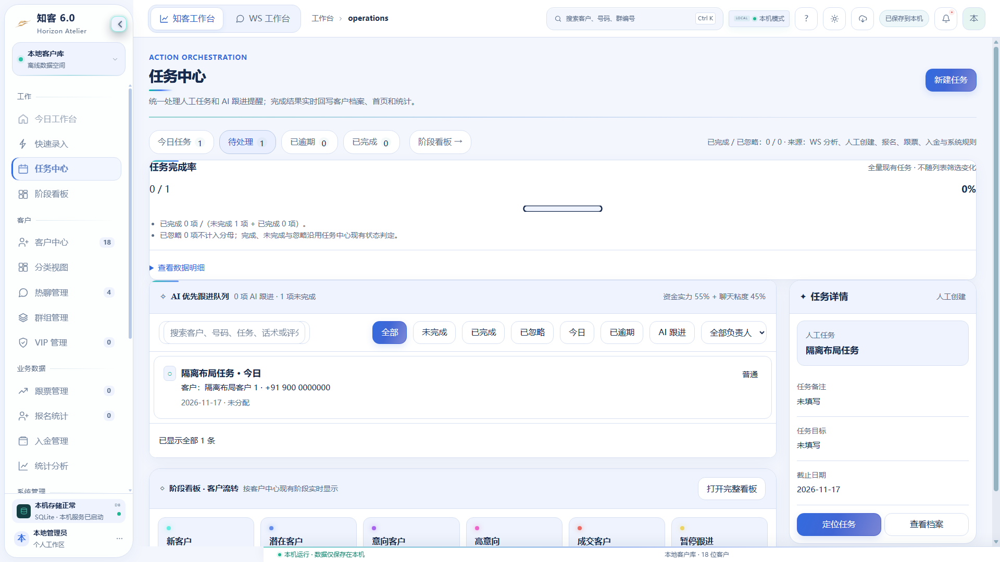
Horizon Atelier Pro

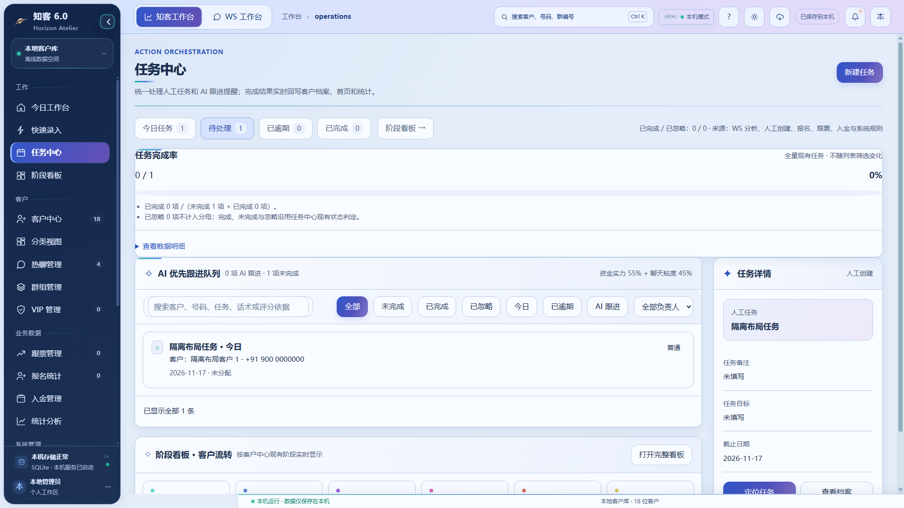
深色主题
升级前

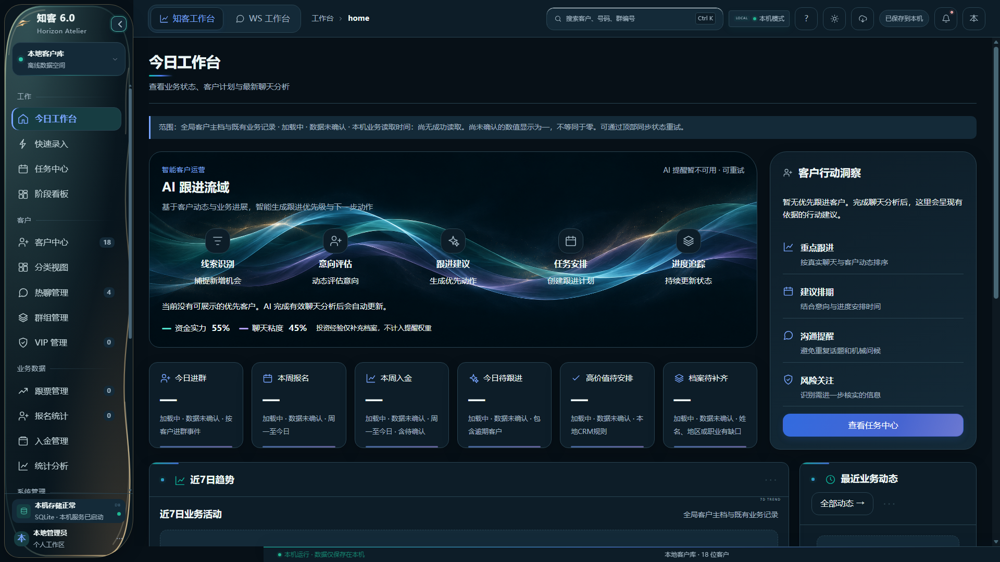
Horizon Atelier Pro

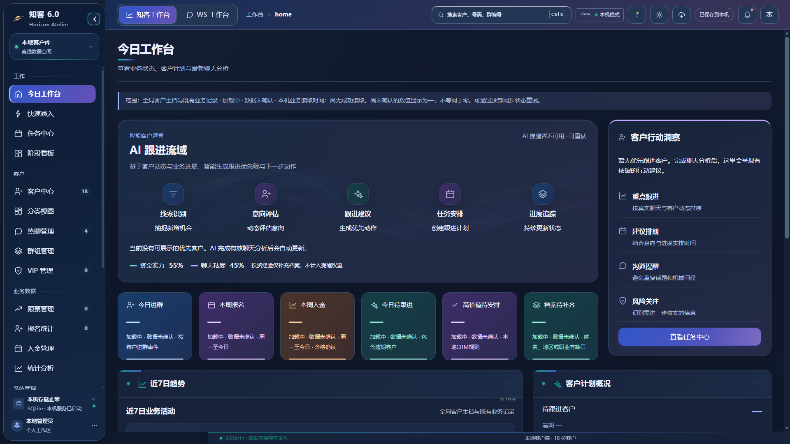
WS 工作台 · 新样式
浅色工作区

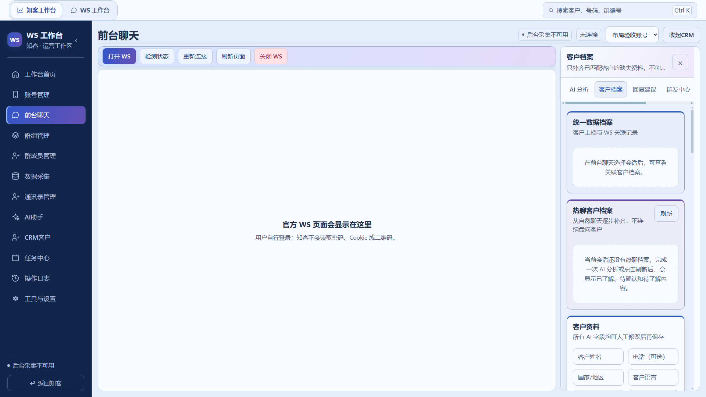
深色工作区

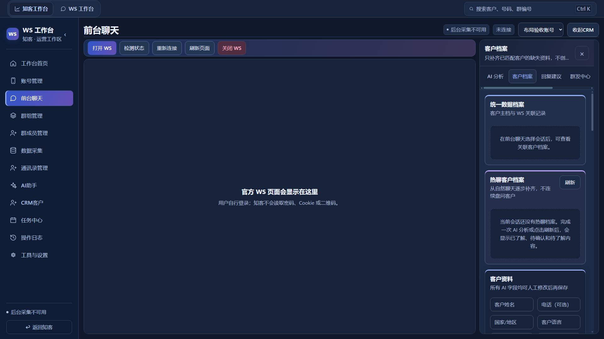
GPT · 双主题与小窗口
浅色

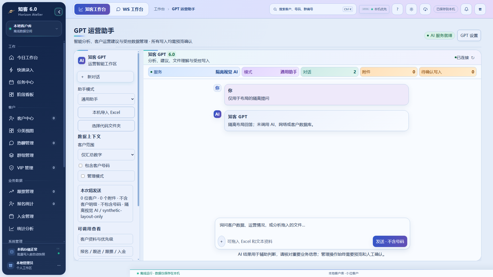
深色

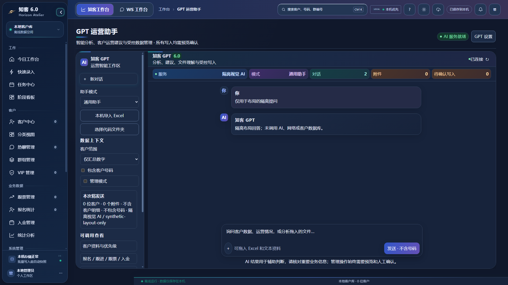